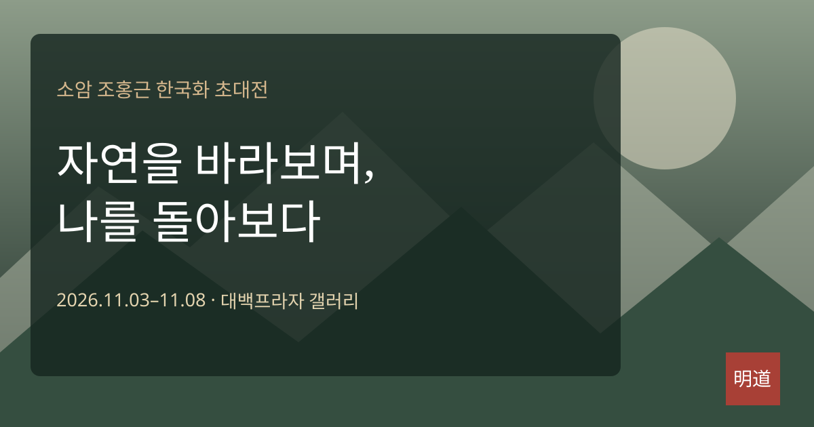

50여 년 동안 자연을 화폭에 담아 온 한국화가 조홍근. 이번 초대전은 눈 덮인 숲길과 계절의 변화를 통해 자연 속의 시간과 생명, 고요와 여백을 생각하게 합니다.
2026년 11월 3일부터 8일까지 대구 대백프라자 12층 갤러리에서 열리는 이번 전시에서는 50호·100호 작품을 포함한 한국화 약 30점을 선보일 예정입니다.
소암(小岩) 조홍근 한국화 초대전
2026. 11. 03 — 11. 08
대구 대백프라자 12층 갤러리
자연의 침묵을 오래 바라보다 보면, 그림은 어느새 삶을 돌아보는 거울이 됩니다.
50여 년 동안 자연을 화폭에 담아 온 한국화가 조홍근. 이번 초대전은 눈 덮인 숲길과 계절의 변화를 통해 자연 속의 시간과 생명, 고요와 여백을 생각하게 합니다.
2026년 11월 3일부터 8일까지 대구 대백프라자 12층 갤러리에서 열리는 이번 전시에서는 50호·100호 작품을 포함한 한국화 약 30점을 선보일 예정입니다.
덜어냄의 미학과 풍경 속 시간.
겨울 풍경의 절제된 빛, 오래된 산의 능선, 나무와 길이 만드는 선들은 자연을 향한 작가의 깊은 응시를 보여줍니다. 빠르게 풍경을 읽기보다 화폭 속에 머무르는 감상이 어울리는 전시입니다.
오른쪽 그래픽은 전시 홍보용 창작 장식 이미지로, 실제 조홍근 화백 작품은 아닙니다.

차가운 계절 속에서도 이어지는 생명의 호흡을 발견합니다.
산과 나무를 통해 자연의 질서와 시간의 층위를 읽습니다.
여백에 관람자의 기억과 사유가 들어설 공간을 마련합니다.
조홍근 화백은 오랜 시간 자연과 마주하며 한국화의 재료와 표현을 탐구해 왔습니다. 과거 언론은 광목에 먹과 채색을 운용하는 작품 세계를 소개했고, 2022년에는 겨울 풍경을 주제로 한 초대전이 보도되었습니다.
관람 시간과 관람료는 방문 전 갤러리 측에 확인해 주세요.